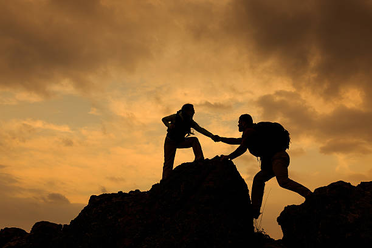

Mountain Climbing

We offer tour guides and plan all round trips for Climbing Mount Kenya, the Second highest mountain on the African continent. We will cater to your health, residential and personal situation. Our prices range from Ksh 15, 000 to Ksh 50, 000 a week (Negotiable)